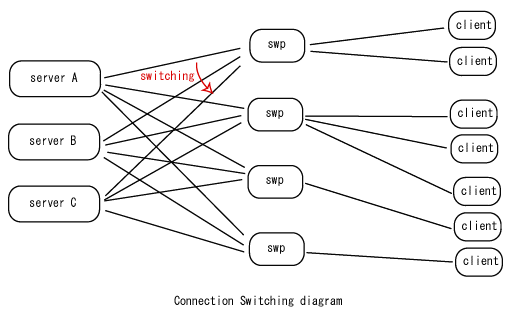
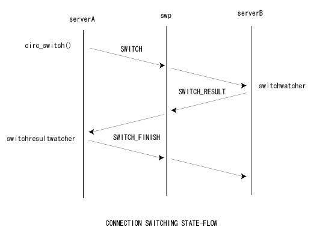

SWP は、アプリケーションのクライアント側プログラムと、 サーバ側プログラムの間に置く中継サーバである。 パケットの暗号化や圧縮の処理を全て SWP が引き受けることにより、処理を 分散し、サーバの処理性能を向上させることができる。 一般的な Web アプリケーションの場合に例えて言えば、Webシステムにおける SSL デコーダのような位置付けである。
この機能により、SWPを置くと以下のような利点がある。
逆に、
の欠点もあるが、特殊なレスポンスが要求されるオンラインアクションゲーム 以外の分野では、以上の制限は障害とはならないはずである。
この他にSWPはスイッチング機能も提供するが、サーバプログラムが複雑になり
デバッグ効率が悪くなるため、
クライアントでスイッチング処理を行うことを推奨する。
SWPのスイッチング機能については、SWPのスイッチング機能
を参照のこと。
swp CONFIG_FILE SWITCHTABLE_FILE
CONFIG_FILE には、設定ファイルを指定する。 この設定ファイルは、各swp ごとに別々のものを用意してもいいし、 同じものを使用してもよい。各マシンごとに1個の swp を走らせる場合は同じでよい。
設定ファイルは、VCE の vce_read_simple_config_file 関数が受けいれる形式である。 設定ファイルに書けるディレクティブ(コマンド)は以下のものがある。
VCE のverboseモードを指定する場合は1、そうでない場合は0。 運用状態では0にする。
すべての送受信を dump したい場合は1、そうでない場合は0。 これは性能低下とログファイルの増大を招くので、 実際に商用運用する場合は0にするべきである。
SWP のメインループで vce_heartbeat_wait_flag() に与える値。 これを0にすると CPU を 100% 食うが、最高速のレスポンスになる。 1にすると最大1ループあたり100ミリ秒の遅延が発生するが アイドル時の CPU 使用量をほぼゼロにできる。 使用目的に応じて調整する(デフォルト値は1)
フロントエンド(クライアントからの接続を受けいれるためのポート)の番号。
クライアントとの通信に使用する暗号アルゴリズム。 各 swp が同じに設定されているほうが簡単なのは言うまでもない。
クライアントとの通信に使用する暗号のキー長。 暗号アルゴリズムによって使用可能な数値が異なるので注意。
クライアントとの通信の受信バッファ。 アプリケーションの内容によるが通常は 16384から32768といった値をとる。 送信バッファより大きくしておくとよい。
クライアントとの間に一定時間通信がない場合自動的に切断する。 秒数で指定する。
クライアントがこのswpに接続できる最大TCP セッション数。
管理プログラムが接続するために待ちうけるポート番号。
管理プログラムが接続するために使うパスワード(平文)。
アプリケーションのサーバの最大数。
サーバとの通信に使う送信バッファ。 これは frontend よりもかなり大きく取る必要があり、 256k 〜 1M がよい。
サーバとの通信に使う受信バッファ。 これは frontend よりもかなり大きく取る必要があり、 256k 〜 1M がよい。
サーバとの間に一定時間通信がない場合にTCPセッションを切断する時間(秒)。
サーバとの通信で使用する暗号アルゴリズム
サーバとの通信で使用する暗号アルゴリズムのキー長。
クライアントがコネクションスイッチ中にデータを送ってきたときでも データを失なわないことを保証するためのバッファのサイズ。 frontend の recvbuf と同程度確保すればよい。 クライアントプログラムが、小さいパケットを時々しか送らないなら、 このバッファは frontend の recvbuf より小さくてもよい。
クライアントが swp に対して接続した場合に、 どのサーバが実際に accept するのかを決定するアルゴリズムを選択する。 top は常にサーバ表の先頭のサーバが担当する。 sequential は、サーバ表の上から順番に担当する。 random はサーバ表のメンバのどれかひとつがランダムに担当する。
一定時間ごとに出力する状態ファイルのパスを指定する。
状態ファイル出力作業用のテンポラリファイルのパスを指定する。 swp は状態ファイルを出力するときに一旦テンポラリファイルに出力 してから rename するが、そのテンポラリファイルのパス。
状態ファイルを出力する周期(秒)を指定する。
SWPでの圧縮解凍機能を使用したい場合は1、そうでない場合は0。(デフォルト値は0)
圧縮解凍のためのワークサイズ。送受信するデータの最大値を設定する。 この値は compress=1 のときのみ有効になる。32MBまで設定可能。 (デフォルト値は1048576(1M))
SWITCHTABLE_FILE には、SWPが接続するサーバの情報を記述する。 単純に "server=" の後ろに IPアドレスとポート番号をスペース等を入れずに コンマで区切って書くだけである。
server=192.168.1.24,12345
後述するSWPのスイッチング機能(非推奨)を使用する場合は、スイッチ先となり得る サーバのリストを定義する。 この場合、同じ ポート番号が重複してはならない。 ポート番号はサーバの ID として使用されるので、 たとえ IP アドレスが異なっていてもポート番号は重複してはならない。
server=192.168.1.24,12345 server=192.168.1.24,12355
swpadm コマンドは、swp をリモート操作するためのプログラムである。 ソースコードはサンプルプログラムとして添付されている。
swpadm HOST PORT KEY_STRING PARAM0 PARAM1 PARAM2 ...
swpadm は単純に PARAMn で指定された文字列をそのまま swp に送信して、 swp が返してくる文字列をそのまま標準出力に表示するだけの機能しかない。
swpadm を使用して以下の事が可能である。 実際には、これらの機能はすべて swp に実装されていることに注意が必要である。
VCEで使用しているnetworkのリソースを文字列で返す。
swp がネットワーク情報を取得するために使用するコマンド。
swp の生存を確認する。 tick_int をそのまま返す。
プロセス(swp)をその場で終了する。exit(0)を呼んでいる。
プロファイリング用のファイル(gmon.out)を出力する。(linuxのみ)
使用しているポートを返す。
get_portで返したportの接続数を返す。
プロセスIDを返す。
swp を安全に停止する。
名前(SWP)を返す。
"get_conn" と同じ。
注意：
SWPのスイッチング機能はサーバプログラムが複雑になり、
デバッグ効率が悪くなるため、推奨していない。クライアント、サーバ間の
レスポンスが飛躍的に良くなった現在では、クライアントでスイッチ処理を
行うことを推奨する。
SWPはさらに、
各 swp と各サーバを総当たり的に接続し、
クライアントとサーバ間の接続を、サーバからサーバへ論理的に切りかえる
機能も提供する(図)。

この機能により、
複数サーバを使って透過的に負荷を分散するようなアプリケーションに
おいて以下のような利点がある。
欠点としては、
が上げられる。
コネクションスイッチはサーバプログラムから、 vce_circ_switch 関数を circ_t
に対して呼びだすことから始まる。
vce_circ_switch 関数が呼びだされるとサーバ側の VCE ライブラリは
コネクションスイッチ要求を swp に対して送信し、
swp はその要求をクライアントには知らせず移転先のサーバにリレーする。
移転先のサーバはメモリを確保し、それが成功したら、 swp に対して結果を返す。
スイッチング処理中のクライアントからのデータ受信に対応するため、
コネクション移転元サーバと移転先サーバの間では、3回のハンドシェイクを行ない、
パケットロスが発生しないことを保証する。
パケット送信による状態遷移は以下の図で説明される。

swp はすべてのサーバの IPアドレスとポートの情報を表の形 (ちょうど、UNIX の fstab のような感じで)で読みこみ、 その表の設定に基いて各サーバに接続する。 サーバのうちどれかが突然異常終了しても、 落ちた当該サーバに現在接続中のクライアント接続以外は影響を受けずに 一定時間後にふたたび接続し、サービスを継続する。
各サーバは個別の ID を持っており、ID と待ちうけポート番号は厳密に一致している。 このように ID とポート番号を一致させる理由は、 サーバ台数が多くなってきたときには、VCEではなく "netstat -tn" など UNIX 標準の解析ツールでデバッグできたほうが デバッグ効率が圧倒的によいからである。 なお、おなじIDをもつサーバをひとつの「サーバ表」 に複数存在させることはできない。
クライアントプログラムはサーバに接続するときに swp の frontend 側(外側)に接続するが、 実際にはどのサーバがその新規コネクションを accept するかを決定する必要がある。 標準添付の swp では、「トップ」「シーケンシャル」「ランダム」の 3つのアルゴリズムをサポートしていて、どのサーバが実際に accept するかを決める。
コネクションスイッチを使ったアプリケーションは以下のような手順をふんで 稼働させる。
コネクションスイッチに関するコーディングはサーバ側のみで必要である。 クライアント側には何らの追加のコードを必要とすることはない。 また swp は標準のものを使用すればよいが、サンプルコードに含まれている swproxy.c を改造することで独自の機能を実装できる。 コネクションスイッチを使用する場合のサーバの コードロジックは以下のようになる(autotest/swsv.cを参照)。
vce_tcpcontext_create
vce_tcpcontext_set_circ_parser
vce_tcpcontext_set_circ_switchwatcher
vce_tcpcontext_set_circ_switchresultwatcher
vce_vec_init_mainserv
while(1){
vce_heartbeat();
}
コネクションスイッチ操作には以下の関数や構造体、列挙型が関係している。 各API関数の詳細はリファレンスマニュアルを参照の事。
コネクションスイッチの、 「サーバ表」を格納するためのデータ構造で使用される。 実際には VCE 内部で使用されるのみで、 アプリケーションではこれを使用したコーディングをすることはない。
スイッチ要求をした後にスイッチ先サーバや swp から返ってくる結果の コードである。各値は以下の意味をもつ。
スイッチが失敗したら、スイッチ元サーバはクライアントに対して何らかの エラーを返すか、そのまま処理を続けるのがよい。
swp(swproxy.c) で使用する。サーバ表の1エントリを格納するための構造体。
swp で使用する。各サーバと各クライアントの接続状態を管理したり、 コネクションスイッチングの設定を格納するための構造体。
swp で使用する。サーバ表をファイルから switchent_t 構造体の配列に 読みこむために使う。
サーバ表の内容を表示する。
ある circ_t を別のサーバに ID を指定してスイッチする。
スイッチ元サーバで、スイッチ操作が完了したときに呼びだされる。 エラーか成功かは、 SWITCH_RESULT 列挙型の引数を調べることで確認できる。
スイッチ先サーバで、スイッチしようとしてきたcirc_t を検出することができる。このコールバックが呼びだされた時点で、 状態バッファや添付データをチェックして、 受けいれ条件を満たしていない場合は拒否などができる。 たとえば、オンラインゲームの場合は、 レベル10以上のプレイヤーしか入れないサーバなどを簡単に作ることができる。